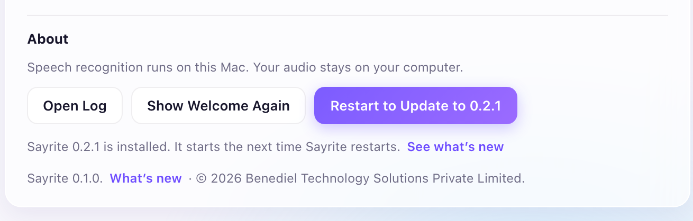

Sayrite updates itself
Every few hours Sayrite checks for a new version. When there is one, it downloads quietly in the background and checks it really comes from us before installing anything.
To finish, choose Restart to Update in the menu bar or in Settings. Busy? Sayrite restarts on its own once you’ve stepped away for a while, never in the middle of a dictation.
